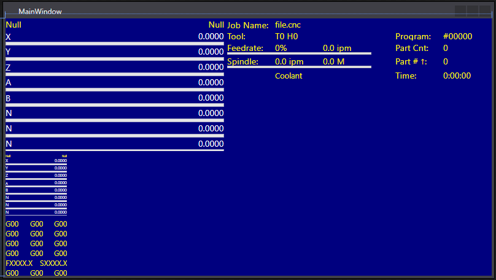

Prerequisites
NOTE: The StatusWindow control is currently being developed. It is NOT INCLUDED in the library.
Adding User Controls To Your Design
Click and drag these User Controls from your Toolbox into your design:
- DroDisplay (Local)
- Name the DroDisplay Dro in the Properties Window.
- In the Miscellaneous Property category, choose DRO_LOCAL for the DroType.
- StatusWindow
- Give it the name StatusWindow in the Properties Window.
- MessageWindow
- Give it the name MessageWindow in the Properties Window.
- DroDisplay (DistanceToGo)
- Give it the name DroDistanceToGo in the Properties Window.
- In the Miscellaneous Property category, choose DRO_DISTANCE_TO_GO for the DroType.
- ActiveGCodes
- Give it the name ActiveGCodes in the Properties Window.
- GCodeDisplay
- Give it the name GCodeDisplay in the Properties Window.
Window Color Formatting
To match the CNC12 color scheme, set the following properties:
- MainWindow -
- Change the Background property color to RGB(0, 0, 128).
- Change the Foreground property color to RGB(255, 247, 0).
- Dro Controls -
- Set the DroTitleColor to RGB(255, 247, 0).
- Set the Forground color to RBG(255, 255, 255).
- Set the LoadBarBackgoundColor property to No brush.
- Set the LoadBarBorderColor property to RGB(255, 255, 255).
- ActiveGCodes -
- Set InactiveGCodes property to RGB(127, 127, 127).
- GCodeDisplay -
- Change ActiveLineBorderColor to RGB(255, 255, 255).
Your window should now look like this:

Implementing The Controls In Your Code
Click on MainWindow.xaml.cs and add the following code to initialize the Controls:
using System.Windows;
namespace CNC12MainWindowExample
{
public partial class MainWindow : Window
{
public MainWindow()
{
InitializeComponent();
Dro.Pipe = cnc12_pipe;
StatusWindow.Pipe = cnc12_pipe;
MessageWindow.Pipe = cnc12_pipe;
DroDistanceToGo.Pipe = cnc12_pipe;
ActiveGCodes.Pipe = cnc12_pipe;
GCodeDisplay.Pipe = cnc12_pipe;
}
}
}
Class for getting and setting different system variables.
Definition CentroidApi.cs:19
Definition APIPacket.cs:9
Running Your Program
- Change your debug configuration to Release.
- Click on Build, then Build Solution.
- Navigate to your_project_directory/bin/Release.
- The Release folder houses your .exe file that can be distributed and run as a standalone application.
Example Project Code
MainWindow.xaml
<Window
xmlns="http://schemas.microsoft.com/winfx/2006/xaml/presentation"
xmlns:x="http://schemas.microsoft.com/winfx/2006/xaml"
xmlns:d="http://schemas.microsoft.com/expression/blend/2008"
xmlns:mc="http://schemas.openxmlformats.org/markup-compatibility/2006"
xmlns:local="clr-namespace:Cnc12MainScreen"
xmlns:CentroidAPIUserControls="clr-namespace:CentroidAPIUserControls;assembly=CentroidAPIUserControls" x:Class="Cnc12MainScreen.MainWindow"
mc:Ignorable="d"
Title="MainWindow" Height="450" Width="800" Background="#FF00007F" Foreground="#FFFFF700">
<Grid>
<CentroidAPIUserControls:DroDisplay x:Name="Dro" HorizontalAlignment="Left" Height="216" VerticalAlignment="Top" Width="356" Foreground="White" LoadBarBackgroundColor="{x:Null}" LoadBarBorderColor="White" DroTitleColor="#FFFFF700"/>
<CentroidAPIUserControls:StatusWindow x:Name="StatusWindow" HorizontalAlignment="Left" Height="100" VerticalAlignment="Top" Width="431" Margin="361,0,0,0" Foreground="#FFFFF700"/>
<CentroidAPIUserControls:MessageWindow x:Name="MessageWindow" HorizontalAlignment="Left" Height="111" Margin="361,105,0,0" VerticalAlignment="Top" Width="431"/>
<CentroidAPIUserControls:DroDisplay x:Name="DroDistanceToGo" HorizontalAlignment="Left" Height="100" Margin="0,221,0,0" VerticalAlignment="Top" Width="100" DroType="DRO_DISTANCE_TO_GO" Foreground="White" DroTitleColor="#FFFFF700" LoadBarBorderColor="White"/>
<CentroidAPIUserControls:ActiveGCodes x:Name="ActiveGCodes" HorizontalAlignment="Left" Height="83" Margin="0,326,0,0" VerticalAlignment="Top" Width="100" Foreground="#FFFFF700" InactiveGCodeColor="#FF7F7F7F"/>
<CentroidAPIUserControls:GCodeDisplay x:Name="GCodeDisplay" HorizontalAlignment="Left" Height="188" Margin="105,221,0,0" VerticalAlignment="Top" Width="687" ActiveLineBorderColor="White"/>
</Grid>
</Window>
MainWindow.xaml.cs
using System.Text;
using System.Threading.Tasks;
using System.Windows;
using System.Windows.Controls;
using System.Windows.Data;
using System.Windows.Documents;
using System.Windows.Input;
using System.Windows.Media;
using System.Windows.Media.Imaging;
using System.Windows.Navigation;
using System.Windows.Shapes;
namespace Cnc12MainScreen
{
public partial class MainWindow : Window
{
public MainWindow()
{
InitializeComponent();
Dro.Pipe = cnc12_pipe;
StatusWindow.Pipe = cnc12_pipe;
MessageWindow.Pipe = cnc12_pipe;
DroDistanceToGo.Pipe = cnc12_pipe;
ActiveGCodes.Pipe = cnc12_pipe;
GCodeDisplay.Pipe = cnc12_pipe;
}
}
}